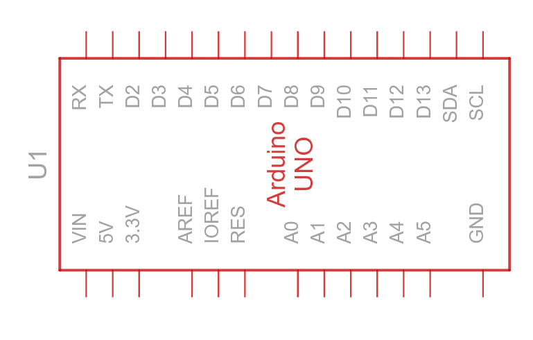
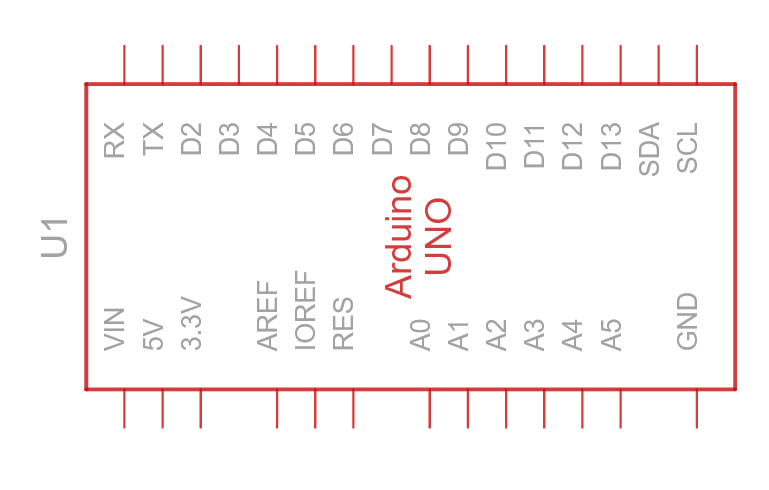
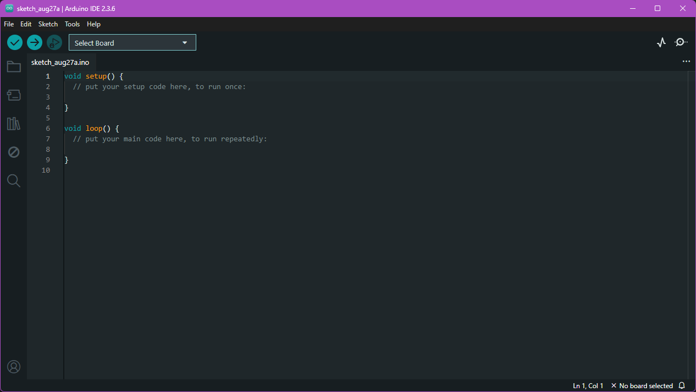

Arduino
O Arduino
 

Nas imagens acima temos uma foto do Arduino Uno e um esquema dele, como o TinkerCad gera. O Arduino é uma Plataforma de desenvolvimento que utiliza do microcontrolador ATmega328, podendo ser encontrado em diversos formatos de encapsulamento.
Ao longo dos projetos abaixo vamos ver as possíbilidades do Arduino e como programa-lo e conecta-lo com com outros dispositivos.
#01 Pisca LED (Blink)
Esse é o “Hello World” do Arduino. A primeira coisa que precisamos é da IDE dele que pode ser encontrada aqui.
Depois de instalado, quando abrir pela primeira vez, diversos pacores serão instalados também, e por fim será visto algo como a figura:

Diferente de outras IDEs já conhecidas, essa é um pouco mais simples. Por padrão
os projetos de arduino são nomeados como sketch e tem a extensão .ino. Nesse
ambiente iremos trabalhar com a linguagem C/C++, mas de forma simplificada,
já que a plataforma fornece uma série de abstrações para facilitar nosso
trabalho.
Como podemos notar, temos um código com o seguinte padrão que iremos utilizar.
void setup(){
}
void loop(){
}
Se voltar a discussão da aula O Início
verá que “Um microcontrolador executa um programa único em loop contínuo”, bom,
na função setup() iremos escrever os código necessários para a condição
inicial do nosso programa. E no loop() será o que nosso programa irá fazer
contínuamente.
Para nosso primeiro projeto precisamos apenas da placa e então do seguinte código:
void setup() {
// put your setup code here, to run once:
pinMode(LED_BUILTIN, OUTPUT);
}
void loop() {
// put your main code here, to run repeatedly:
digitalWrite(LED_BUILTIN, HIGH);
delay(500);
digitalWrite(LED_BUILTIN, LOW);
delay(500);
}
Muita coisa acontecendo, mas vamos destrinchar com calma:
pinMode(LED_BUILTIN, OUTPUT);
Aqui estamos configurando um “pino” do arduino, no caso estamos utilizando a
constante predefinida LED_BUILTIN que corresponde ao led soldado a placa do
Arduino, e estamos definindo com OUTPUT ou seja, iremos enviar/escrever dados
neste “pino”.
digitalWrite(LED_BUILTIN, HIGH);
Com o digitalWrite(pino, valor) é possivel definir o estado digital do pino
configurado como saída. Como é uma saida digital pode ser HIGH (tensão alta, geralmente 5V) para ligar
o componente, ou LOW (0V) para desligar.
delay(500);
Por fim o código pausa a execução do programa pelo tempo em milissegundos indicado, no caso 500ms que é 0.5 segundo.
Depois de feito o código podemos conectar a placa, por sua entrada USB no computador, e ele deverá reconhecer. Caso não reconheça será necessário escolher a porta USb e o tipo da placa que estamos utilizando – Provavelmente Arduino Uno.
Feito isso podemos compilar e verificar nosso código clicando no simbolo de
“certinho/check” ✔️ CTRL+R.
E se tudo correu bem podemos fazer o upload do código para a placa clicando no
simbolo de seta CTRL+U.
E teremos o led soldado à placa piscando!
Buzzer Sonoro
Para o nosso segundo projeto, vamos fazer o Arduino emitir sons! Para isso, você precisará da sua placa, de um buzzer (uma pequena cápsula que gera som) e de dois fios para a conexão.
Conecte o pino positivo do buzzer (geralmente o mais longo, ou marcado com “+”)
na porta digital 3 da sua placa. O pino negativo deve ser conectado à porta
GND (Ground/Terra).
Agora, vamos ao código:
const int speakerPin = 3;
void setup() {
// put your setup code here, to run once:
pinMode(speakerPin, OUTPUT);
}
void loop() {
// put your main code here, to run repeatedly:
tone(speakerPin, 440);
delay(500);
noTone(speakerPin);
delay(500);
}
Parece simples, não é? Vamos destrinchar o que há de novo:
const int speakerPin = 3;
Aqui, criamos uma constante chamada speakerPin para guardar o número do pino
ao qual conectamos o buzzer. Usar um nome em vez do número torna o código mais
fácil de ler e modificar no futuro.
tone(speakerPin, 440);
Esta é a função principal para gerar som. O tone(pino, frequencia) cria uma
onda quadrada no pino especificado com uma frequência que define a nota musical.
No nosso caso, estamos gerando um som de 440 Hz no pino 3, que corresponde à
nota musical Lá. Perceba que o pino 3 tem um til ~ ao lado dele na placa do
Arduino, mas o que isso significa?
O Arduino tem 2 tipos de pinos dentro do conjunto de pinos digitais (que vão de 0 a 13):
Pinos Digitais Comuns: A maioria dos pinos digitais funciona como um interruptor de luz: eles podem estar apenas em dois estados, ou completamente ligados (HIGH, 5V) ou completamente desligados (LOW, 0V). Não há meio-termo.
Pinos Digitais PWM (~): Os pinos marcados com um til (~), como o nosso pino 3, são especiais. Eles ainda são digitais, mas possuem a capacidade de PWM (Pulse Width Modulation). Isso significa que eles podem ligar e desligar centenas de vezes por segundo. Ao variar a proporção de tempo entre ligado e desligado, eles conseguem simular valores intermediários. Pense neles não como um interruptor, mas como um dimmer, aquele botão que controla a intensidade de uma lâmpada. Com eles, podemos controlar o brilho de um LED ou a velocidade de um motor ou a frequência do buzzer.
noTone(speakerPin);
Como o nome sugere, noTone(pino) para a geração do som que foi iniciada pela
função tone. Essencialmente, ela desliga o som no pino do buzzer.
O resto do código funciona de forma parecida com o nosso projeto do LED: o
loop liga o som com tone, espera meio segundo com delay(500), desliga o
som com noTone e espera mais meio segundo em silêncio antes de repetir tudo de
novo.
Leitura de Potenciômetro
Agora vamos aprender a ler informações de um sensor analógico. Usaremos um potenciômetro, que é basicamente um botão de girar, para enviar valores variáveis para a placa e visualizá-los no computador. Para a montagem, você precisará da placa, do potenciômetro e de três fios.
A conexão é simples: o potenciômetro tem três pinos. Conecte um dos pinos
externos ao GND e o outro ao 5V. O pino do meio, que é o pino de sinal, deve
ser conectado à porta analógica A0 da sua placa.
Com tudo montado, vamos ao código:
int potPin = A0;
int potValue = 0;
void setup() {
Serial.begin(9600);
}
void loop() {
potValue = analogRead(potPin);
Serial.print("Valor do Potenciometro: ");
Serial.println(potValue);
delay(200);
}
E temos mais novidades nesse código:
int potPin = A0;
Aqui A0 é uma definição da platafoma do arduino que facilita acessarmos os pinos de leitura analógica (Analogic Input)
Serial.begin(9600);
Esta função, colocada no setup(), inicia a comunicação serial entre o Arduino
e o computador. É como abrir um canal de conversa. O número 9600 é a
“velocidade” da comunicação (baud rate), e é importante que o Arduino e o
computador estejam configurados com a mesma velocidade para se entenderem.
potValue = analogRead(potPin);
Enquanto digitalWrite() enviava um sinal HIGH ou LOW, a função
analogRead(pino) lê a tensão em um pino de entrada analógica (como o A0).
Ela converte essa tensão em um número que vai de 0 (quando o pino está em
0V) a 1023 (quando o pino está em 5V). Nós guardamos esse número na variável
potValue.
Serial.print("Valor do Potenciometro: ");
Serial.println(potValue);
Aqui, usamos duas funções para enviar os dados para o computador.
Serial.print() escreve o texto na tela, mas não pula para a próxima linha. Em
seguida, Serial.println() escreve o valor da variável potValue e move o
cursor para a linha de baixo, deixando a saída organizada para a próxima
leitura.
Teremos os valores do potenciômetro, de 0 a 1023, aparecendo na tela em tempo real conforme você gira o eixo!
Controle de Intensidade do LED com Potenciômetro
Vamos agora construir um projeto interativo utilizando tudo que já vimos: um dimmer para controlar a intensidade de um LED. Usaremos o valor lido de um potenciômetro para ajustar o brilho do LED em tempo real. Para a montagem, você precisará da placa, um LED, um potenciômetro, um resistor de 220Ω (ou 330Ω) e alguns fios.
A montagem combina nossos projetos anteriores:
-
Potenciômetro: Conecte um pino externo ao
GND, o outro ao5Ve o pino do meio à porta analógicaA0. -
LED: Conecte o pino mais curto (cátodo) ao
GND. Conecte o pino mais longo (ânodo) a uma ponta do resistor, e a outra ponta do resistor à porta digital~3. Usamos o pino 3 por ser um pino PWM.
Com o circuito pronto, vamos ao código:
const int potPin = A0;
const int ledPin = 3;
int potValue = 0;
int ai2pwm(int val){
return map(val, 0, 1023, 0, 255);
}
void setup() {
pinMode(ledPin, OUTPUT);
}
void loop() {
potValue = analogRead(potPin);
analogWrite(ledPin, ai2pwm(potValue));
}
Este código introduz duas funções novas e muito importantes.
analogWrite(ledPin, valor);
Esta é a função que nos permite usar o poder do PWM. O analogWrite(pino,
valor) envia um pulso para um pino PWM (~). O valor que enviamos deve ser
um número entre 0 (LED completamente desligado) e 255 (LED com brilho
máximo). Ao variar esse número, controlamos a intensidade do brilho do LED.
int ai2pwm(int val){
return map(val, 0, 1023, 0, 255);
}
Aqui temos um problema de “escala”. A função analogRead() nos dá um valor
entre 0 e 1023, mas a analogWrite() espera um valor entre 0 e 255. A
função map() resolve isso para nós! Ela remapeia um número de uma faixa para
outra. A sintaxe é: map(valor, minimo_original, maximo_original, minimo_novo,
maximo_novo). No nosso caso, ela pega o valor lido do potenciômetro (entre
0-1023) e o “traduz” para a escala que o analogWrite() entende (entre 0-255).
Nós criamos a função ai2pwm para deixar nosso loop() principal mais limpo e
legível.
Agora temos o nosso LED funcionando com um dimmer! Ao girar o eixo do potenciômetro, você verá o brilho do LED aumentar e diminuir suavemente.
Conclusão
Ao longo destes projetos, você construiu a base sólida para desbravar o universo do Arduino. Mais do que apenas seguir receitas, você aprendeu a pensar como um desenvolvedor de sistemas embarcados.
Vamos recapitular os fundamentos que você dominou:
- Saídas Digitais (digitalWrite): O controle fundamental de ligar e desligar componentes.
- Saídas PWM (analogWrite): A capacidade de simular saídas analógicas para controlar a intensidade.
- Entradas Analógicas (analogRead): A habilidade de ler dados de sensores com valores variáveis.
- Comunicação Serial (Serial.print): A ferramenta indispensável para visualizar dados e depurar seu código.
- Mapeamento de Dados (map): A lógica de programação para “traduzir” informações entre diferentes componentes.
O mais importante é que estes quatro projetos formaram a base para integrar componentes muito mais complexos. A partir de agora, o desafio muda: não se trata mais de aprender o que é uma saída digital, mas sim de entender as especificidades do próximo componente que você irá utilizar.
Seja um sensor de umidade, um display LCD, um módulo GPS ou um acelerômetro, a sua análise inicial será sempre a mesma: “Como eu converso com este componente? Ele me envia dados (entrada) ou recebe comandos (saída)? Ele é digital, analógico ou usa um protocolo específico?”. A base que você construiu aqui é o que permite responder a essas perguntas.
Inclusive, quando você encontrar componentes que usam protocolos de comunicação como o I2C ou SPI, perceberá que, por trás das bibliotecas e rotinas mais complexas, os construtos básicos que você aprendeu são os mesmos. Haverá sempre uma etapa de inicialização no setup(), uma função para ler dados do componente e outra para escrever comandos nele. A estrutura fundamental de ler, processar e escrever que você praticou aqui é universal.